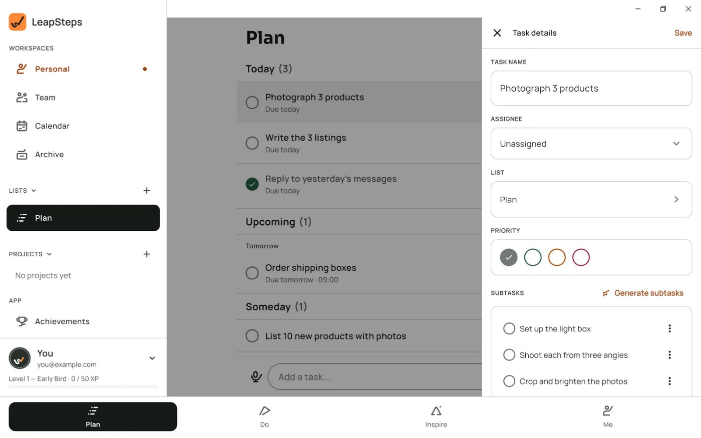
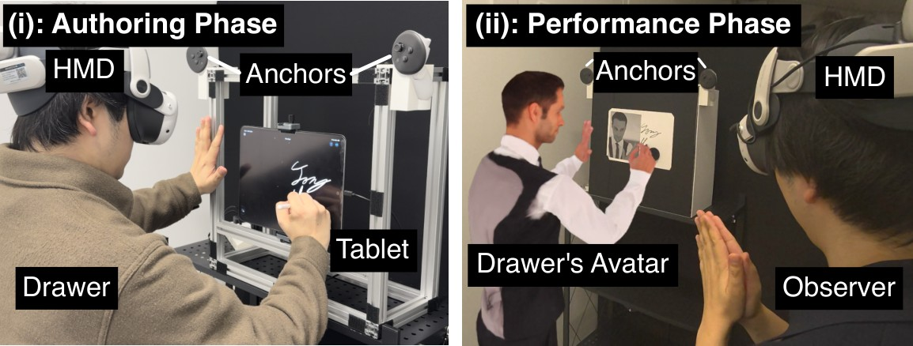
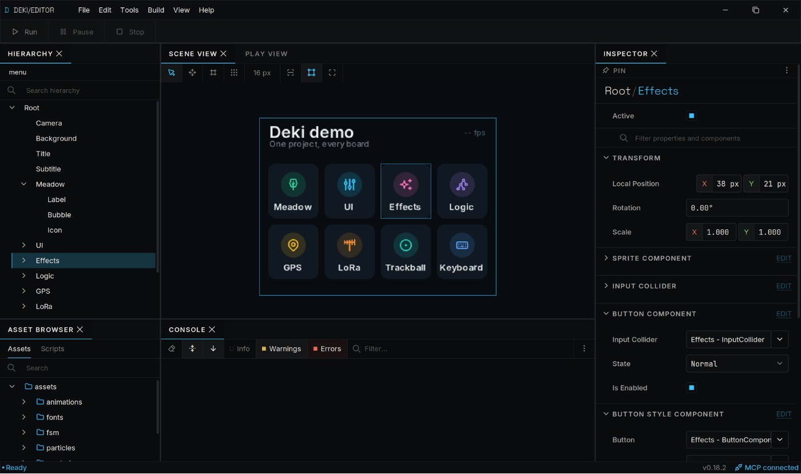
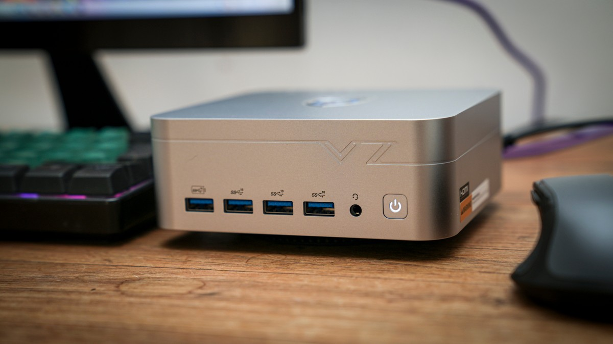
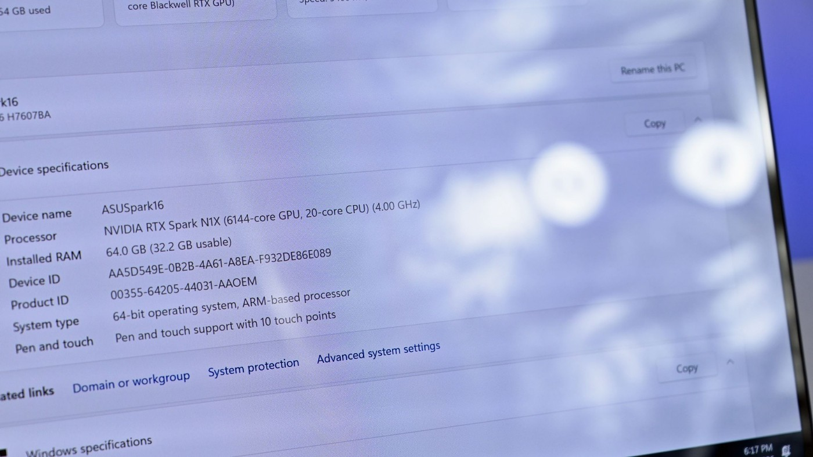
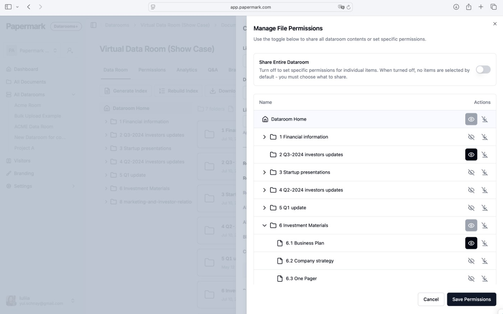
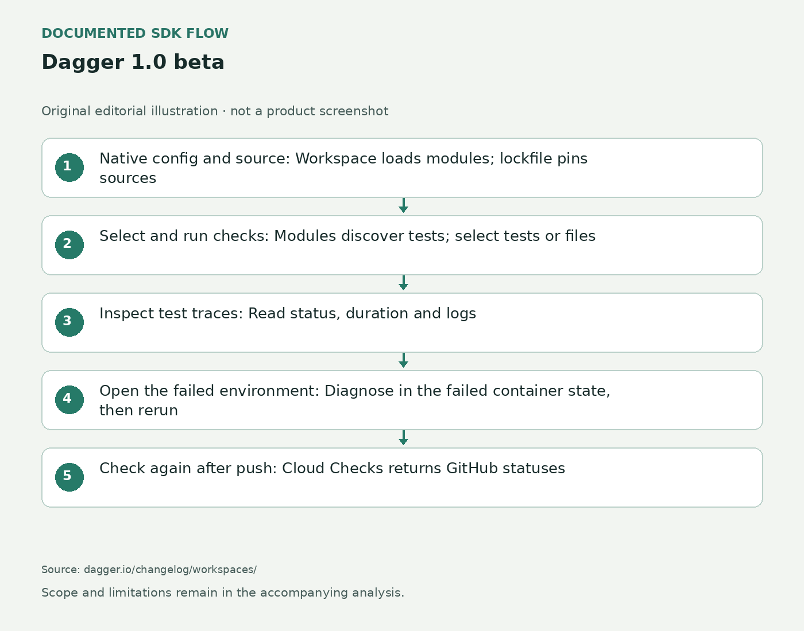
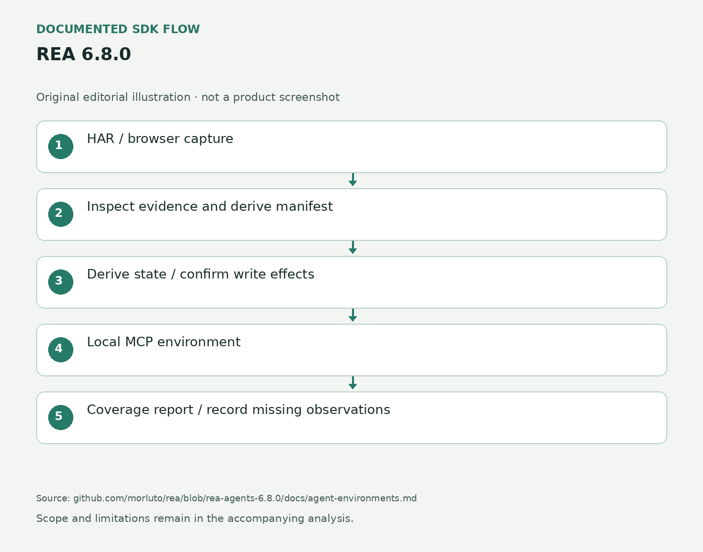
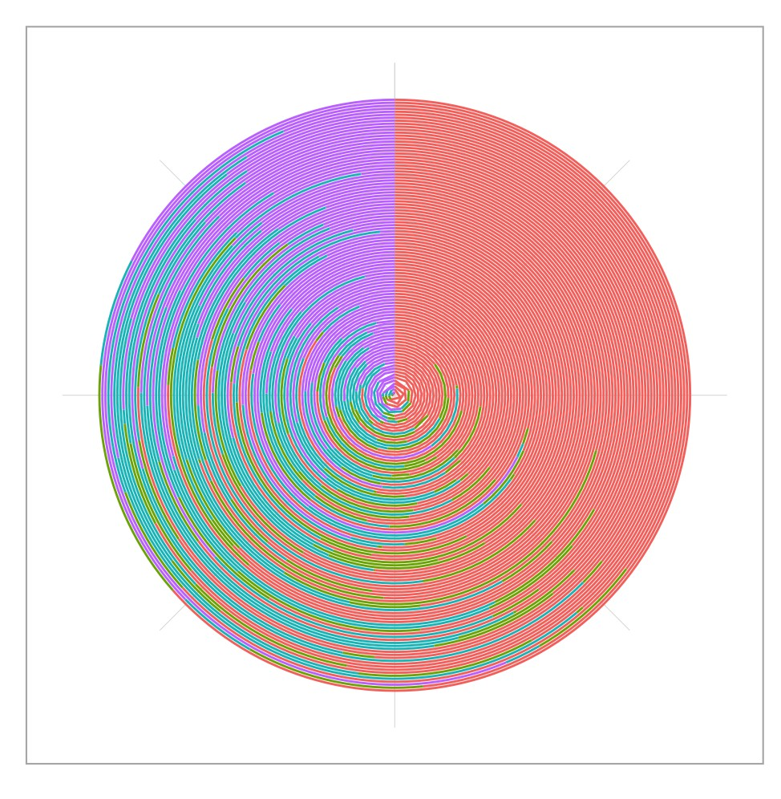
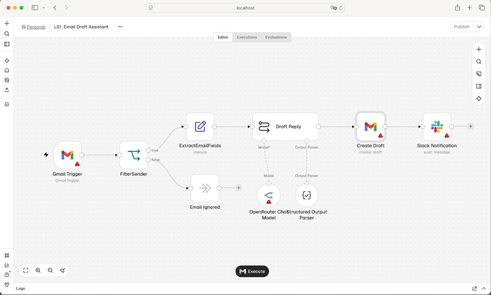

AI Daily · 2026-10-26 · Sources
中文 · English · Overview / 总览
- S01 Windows1.0.3 changelog2026-10-25
- S02 Connect AI assistants2026-10-25
- S03 LeapSteps product and FAQ2026-10-25
- S04 LeapSteps press kit2026-10-23
- S05 LeapSteps Windows interface2026-10-24
- S06 LeapSteps supportDate not stated
- S07 TV Detox v1.5.62026-10-26T05:39:20Z
- S08 TV Detox v1.5.52026-10-26T03:39:30Z
- S09 TV Detox v1.5.42026-10-25T08:51:40Z
- S10 TCL HDMI failure and recovery2026-10-25T21:18:35Z
- S11 Q651G native panel fix2026-10-25T15:27:51Z
- S12 Two Q651G device notes2026-10-25T15:27:53Z
- S13 TV Detox READMEDate not stated
- S14 dumbTV launcher1.52026-10-25T18:48:05Z
- S15 dumbTV launcher1.42026-10-25T18:02:24Z
- S16 Wake guard contributor test2026-10-25T14:22:56Z
- S17 dumbTV launcher READMEDate not stated
- S18 dumbTV project READMEDate not stated
- S19 CleanYourTV v3.0.02026-10-25T15:53:12Z
- S20 Smart Home at v3.0.0Date not stated
- S21 Ad Blocking at v3.0.0Date not stated
- S22 Sources at v3.0.0Date not stated
- S23 TCL G10 microphone report2026-10-24T15:00:52Z
- S24 Sankey list contradiction2026-10-23T14:46:10Z
- S25 Module-card contract guideDate not stated
- S26 CleanYourTV READMEDate not stated
- S27 Llama Windows v0.13.0 release2026-10-20
- S28 Llama Windows READMEDate not stated
- S29 Llama product pageDate not stated
- S30 October25 discovery board2026-10-25
- S31 MOSS-Image Forge Neo moss-image-forge-neoDate not stated
- S32 MOSS-Image Forge Neo 52026-10-24
- S33 MOSS-Image Forge Neo 028cbe1546c66ffec6bf0473a01fef8ba4e47f49Date not stated
- S34 MOSS-Image Forge Neo 42026-10-24
- S35 MOSS-Image Forge Neo Moss-Image-EditDate not stated
- S36 MOSS-Image Forge Neo LICENSEDate not stated
- S37 Flint-interactive announcement2026-10-22
- S38 Flint READMEDate not stated
- S39 Flint changelog2026-10-21
- S40 Flint interaction programming APIDate not stated
- S41 MIT LicenseDate not stated
- S42 GELLI full paper v12026-10-22T23:05:32Z
- S43 GELLI abstract and submission history2026-10-22T23:05:32Z
- S44 New listings for Monday, 26 October 20262026-10-26
- S45 Availability of submissionsDate not stated
- S46 Present Drawing full paper v12026-10-23T04:57:40Z
- S47 Present Drawing abstract and submission history2026-10-23T04:57:40Z
- S48 Review: Ray-Ban Meta Audio2026-10-24T05:15:00
- S49 Ray-Ban Meta Audio product and FAQDate not stated
- S50 Ray-Ban Meta Audio, Our First Audio Glasses, Are Here2026-10-13
- S51 Introducing Ray-Ban Meta Audio and More AI Glasses Styles2026-09-23
- S52 Deki 0.20 announcement2026-10-24
- S53 Deki Editor changelog2026-10-24
- S54 Deki Editor documentationDate not stated
- S55 Making it fastDate not stated
- S56 Deki Editor0.20.3 release2026-10-24
- S57 Deki Editor licenseDate not stated
- S58 VZMORE AX9 Max AI mini PC review2026-10-24
- S59 AX9 Max AI product specificationsDate not stated
- S60 Ryzen AI9 HX470 specificationsDate not stated
- S61 Get started with LM StudioDate not stated
- S62 lms loadDate not stated
- S63 ASUS ProArt P16 RTX Spark review2026-10-24
- S64 ProArt P16 H7607 productDate not stated
- S65 ProArt P16 H7607 technical specificationsDate not stated
- S66 ASUS ProArt RTX Spark at IFA20262026-09-02
- S67 ASUS laptops with NVIDIA RTX Spark2026-07-08
- S68 Cline Desktop 0.0.49 release2026-10-26T04:49:34Z
- S69 Cline SDK 0.2.0 release2026-10-26T04:49:34Z
- S70 Cline Desktop tagged architectureDate not stated
- S71 Cline Desktop product pageDate not stated
- S72 Cline licenseDate not stated
- S73 Kimi Code CLI2.3.2 release2026-10-25T07:59:14Z
- S74 Require explicit subagent requestsDate not stated
- S75 Leave swarm mode to the userDate not stated
- S76 Tagged agents documentationDate not stated
- S77 Tagged slash commandsDate not stated
- S78 Papermark Data Rooms PH launchDate not stated
- S79 Introducing Papermark Data Rooms2.02026-10-25
- S80 Papermark APIDate not stated
- S81 CLI getting startedDate not stated
- S82 Papermark MCPDate not stated
- S83 API scopesDate not stated
- S84 AuthenticationDate not stated
- S85 Brand a data roomDate not stated
- S86 Show HN: Corgi2026-10-23
- S87 Corgi READMEDate not stated
- S88 Using CorgiDate not stated
- S89 Corgi official product demoDate not stated
- S90 Corgi official demo rendering codeDate not stated
- S91 Dagger 1.0 beta2026-10-23
- S92 Workspaces2026-10-22
- S93 Test-native CI2026-10-22
- S94 Self-orchestrating tests2026-10-22
- S95 Dev shells2026-10-22
- S96 Migrate to Dagger 1.0Date not stated
- S97 Cloud ChecksDate not stated
- S98 Dagger Cloud pricingDate not stated
- S99 Install the Dagger CLIDate not stated
- S100 Dagger LICENSEDate not stated
- S101 REA 6.8.0 release2026-10-25T08:36:02Z
- S102 Agent environments from recorded capturesDate not stated
- S103 REA tagged READMEDate not stated
- S104 MCP TypeScript SDK 2.4 release2026-10-23T18:32:25Z
- S105 Use skills from MCP serversDate not stated
- S106 Serve skills from an MCP serverDate not stated
- S107 MCP licensing transitionDate not stated
- S108 Adaptive Uncertainty Visualization With jk-Plots2026-10-22T10:28:15Z
- S109 jk-Plots abstract/history/license2026-10-22T10:28:15Z
- S110 Recent HCI announcements2026-10-23
- S111 Chatbot Factuality Indicators full paper v12026-10-23T16:49:14Z
- S112 Chatbot Factuality Indicators abstract and submission history2026-10-23T16:49:14Z
- S113 llama.cpp b118502026-10-24T05:30:02Z
- S114 Tagged TTS guideDate not stated
- S115 Tagged Soprano conversion sourceDate not stated
- S116 Tagged Soprano Vocos sourceDate not stated
- S117 Soprano1.1 model card2026-01-14
- S118 llama.cpp MIT licenseDate not stated
- S119 n8n2.45.0 prerelease2026-10-20T09:10:14Z
- S120 MCP tool permissions PR39878Date not stated
- S121 Connector approval PR39996Date not stated
- S122 Subagent budgets PR40884Date not stated
- S123 Public API idempotency PR40978Date not stated
- S124 n8n pricingDate not stated
- S125 n8n licenseDate not stated
- S126 McpToolPermissionsEditor.vue at n8n@2.45.0Date not stated
- S127 AgentRegistryMcpConfigForm.vue at n8n@2.45.0Date not stated
- S128 mcp-client-factory.ts at n8n@2.45.0Date not stated
- S129 1791809300081-MigrateAgentMcpToolPermissions.ts at n8n@2.45.0Date not stated
- S130 inline-agent-config.schema.ts at n8n@2.45.0Date not stated
LeapSteps Windows1.0.3
2026-10-25 · near-three-day · Maintainer documentation and release claims; no independent runtime test
S01 — https://leapsteps.ai/whats-new · S05 — https://leapsteps.ai/windows · S02 — https://leapsteps.ai/ai-assistants · S03 — https://leapsteps.ai/ · S06 — https://leapsteps.ai/support
TV Detox
2026-10-26T05:39:20Z · main · AI-assisted setup workflow, not runtime AI; primary releases plus firsthand contributor device reports; no editorial installation
S09 — https://github.com/Ansub/tv-detox/releases/tag/v1.5.4 · S13 — https://github.com/Ansub/tv-detox · S08 — https://github.com/Ansub/tv-detox/releases/tag/v1.5.5 · S10 — https://github.com/Ansub/tv-detox/pull/82 · S07 — https://github.com/Ansub/tv-detox/releases/tag/v1.5.6 · S11 — https://github.com/Ansub/tv-detox/pull/78 · S12 — https://github.com/Ansub/tv-detox/pull/79
dumbTV home
2026-10-25T18:48:05Z · main · AI-assisted customization/setup project; release notes and contributor device test, not runtime AI or editorial test
S14 — https://github.com/humblemuzzu/dumbtv/releases/tag/launcher-v1.5 · S17 — https://github.com/humblemuzzu/dumbtv/blob/main/launcher/README.md · S15 — https://github.com/humblemuzzu/dumbtv/releases/tag/launcher-v1.4 · S16 — https://github.com/humblemuzzu/dumbtv/pull/102 · S18 — https://github.com/humblemuzzu/dumbtv
CleanYourTV 3.0
2026-10-25T15:53:12Z · main · AI-assisted television customization project; primary tagged documentation, author stand-in-server demonstrations, firsthand TCL report; no editorial device test
S19 — https://github.com/Gathin23/cleanyourtv/releases/tag/v3.0.0 · S25 — https://github.com/Gathin23/cleanyourtv/blob/main/docs/modules.md · S26 — https://github.com/Gathin23/cleanyourtv · S20 — https://github.com/Gathin23/cleanyourtv/blob/v3.0.0/addons/smart-home/README.md · S21 — https://github.com/Gathin23/cleanyourtv/blob/v3.0.0/addons/ad-blocking/README.md · S22 — https://github.com/Gathin23/cleanyourtv/blob/v3.0.0/addons/sources/README.md · S23 — https://github.com/Gathin23/cleanyourtv/issues/1441 · S24 — https://github.com/Gathin23/cleanyourtv/issues/1203
Llama Windows 0.13
2026-10-20T08:13:07Z · seven-day · Maintainer documentation and release claims; no independent runtime test
S27 — https://github.com/ggml-org/Llama-Windows/releases/tag/v0.13.0 · S28 — https://github.com/ggml-org/Llama-Windows · S29 — https://llama.app/
MOSS-Image for Forge Neo
2026-10-24T05:14:25Z · near-three-day · developer surface; dated implementation and maintainer test reports, one user-confirmed earlier workaround; no editorial execution
S31 — https://github.com/eduardoabreu81/moss-image-forge-neo · S32 — https://github.com/eduardoabreu81/moss-image-forge-neo/issues/5 · S33 — https://github.com/eduardoabreu81/moss-image-forge-neo/commit/028cbe1546c66ffec6bf0473a01fef8ba4e47f49 · S34 — https://github.com/eduardoabreu81/moss-image-forge-neo/issues/4 · S35 — https://huggingface.co/chinoll/Moss-Image-Edit · S36 — https://github.com/eduardoabreu81/moss-image-forge-neo/blob/main/LICENSE
Flint Interactive
2026-10-21 · seven-day · developer surface; maintainer release, implementation documentation and official demo; no editorial runtime test
S38 — https://github.com/microsoft/flint-chart/blob/main/README.md · S40 — https://github.com/microsoft/flint-chart/blob/main/docs/interaction-api.md · S39 — https://github.com/microsoft/flint-chart/blob/main/CHANGELOG.md
GELLI
2026-10-26 (scheduled announcement) · main · research signal; author study, no independent reproduction
S42 — https://arxiv.org/html/2610.31987v1
Present Drawing
2026-10-26 (scheduled announcement) · main · research signal; author study, no independent reproduction
S46 — https://arxiv.org/html/2610.32166v1
Ray-Ban Meta Audio
2026-10-24 · near-three-day · WIRED hands-on observation; Meta documentation for mechanics and battery claims; no editorial device test
S49 — https://www.meta.com/ai-glasses/ray-ban-meta-audio/ · S48 — https://www.wired.com/review/ray-ban-meta-audio/ · S51 — https://about.fb.com/news/2026/09/introducing-ray-ban-meta-audio-glasses-new-styles-plus-muse/ · S50 — https://www.meta.com/blog/ray-ban-meta-audio-our-first-audio-glasses-are-here/
Deki Engine 0.20
2026-10-24 · near-three-day · Original maintainer release and documentation; author board tests, no independent benchmark
S54 — https://dekiengine.com/editor/ · S53 — https://github.com/dekiengine/deki-editor/blob/master/CHANGELOG.md · S55 — https://dekiengine.github.io/docs/guide-performance.html · S52 — https://dekiengine.com/blog/deki-0-20-smooth-screens/ · S56 — https://github.com/dekiengine/deki-editor/releases/tag/0.20.3
VZMORE AX9 Max AI
2026-10-24 · near-three-day · TechRadar hands-on review; manufacturer and AMD specifications plus LM Studio documentation; no editorial test
S61 — https://lmstudio.ai/docs/app/basics · S62 — https://lmstudio.ai/docs/cli/local-models/load · S59 — https://vzmore.co.uk/products/ax9-max-ai-mini-pc · S58 — https://www.techradar.com/pro/vzmore-ax9-max-ai-mini-pc-review · S60 — https://www.amd.com/en/products/processors/laptop/ryzen/ai-400-series/amd-ryzen-ai-9-hx-470.html
ASUS ProArt P16 H7607
2026-10-24 · near-three-day · Independent Windows Central review; original ASUS product and technical documentation; no editorial device test
S64 — https://www.asus.com/us/laptops/for-creators/proart/proart-p16-h7607/ · S66 — https://press.asus.com/news/press-releases/asus-proart-p16-p14-gr1x-rtx-spark-ifa-2026/ · S67 — https://www.asus.com/us/blog/asus-laptops-with-nvidia-rtx-spark-transforming-ai-workflows-for-creators/ · S63 — https://www.windowscentral.com/hardware/laptops/asus-proart-p16-rtx-spark-review-2016 · S65 — https://www.asus.com/us/laptops/for-creators/proart/proart-p16-h7607/techspec/
Cline Desktop 0.0.49
2026-10-26T04:49:34Z · main · Original maintainer release and implementation documentation; no editorial runtime test
S68 — https://github.com/Cline/cline/releases/tag/desktop-v0.0.49 · S69 — https://github.com/Cline/cline/releases/tag/sdk%2Fsdk%2Fv0.2.0 · S70 — https://github.com/Cline/cline/blob/desktop-v0.0.49/apps/examples/desktop-app/README.md · S71 — https://cline.bot/desktop · S72 — https://github.com/Cline/cline/blob/desktop-v0.0.49/LICENSE
Kimi Code CLI 2.3.2
2026-10-25T07:59:14Z · near-three-day · Original release, tagged documentation and merged implementation; not editorial runtime testing
S73 — https://github.com/MoonshotAI/kimi-code/releases/tag/%40moonshot-ai%2Fkimi-code%402.3.2 · S74 — https://github.com/MoonshotAI/kimi-code/pull/4386 · S75 — https://github.com/MoonshotAI/kimi-code/pull/4384 · S77 — https://github.com/MoonshotAI/kimi-code/blob/%40moonshot-ai%2Fkimi-code%402.3.2/docs/en/reference/slash-commands.md · S76 — https://github.com/MoonshotAI/kimi-code/blob/%40moonshot-ai%2Fkimi-code%402.3.2/docs/en/customization/agents.md
Papermark Data Rooms 2.0
2026-10-25 · near-three-day · Vendor release, maker explanation and official documentation; no independent task or setup-speed test
S78 — https://www.producthunt.com/products/papermark-2 · S79 — https://www.papermark.com/news/introducing-data-rooms-2-0 · S80 — https://www.papermark.com/docs/api · S81 — https://www.papermark.com/docs/cli/getting-started · S82 — https://www.papermark.com/docs/mcp · S83 — https://www.papermark.com/docs/api/scopes · S84 — https://www.papermark.com/docs/authentication · S85 — https://www.papermark.com/docs/guides/brand-a-data-room
Corgi
2026-10-23 · seven-day · Primary documentation and author announcement; no independent installation or performance test
S87 — https://github.com/tals/corgi/blob/main/README.md · S88 — https://github.com/tals/corgi/blob/main/docs/reference.md · S89 — https://corgi.computer/ · S86 — https://news.ycombinator.com/item?id=50214373
Dagger 1.0 beta
2026-10-22 · seven-day · Primary documentation and author announcement; no independent installation or performance test
S92 — https://dagger.io/changelog/workspaces/ · S91 — https://dagger.io/blog/dagger-10-beta/ · S93 — https://dagger.io/changelog/test-native-ci/ · S95 — https://dagger.io/changelog/dev-shells/ · S94 — https://dagger.io/changelog/self-orchestrating-tests/ · S96 — https://docs.dagger.io/migrate-to-v1/ · S97 — https://dagger.io/changelog/cloud-checks/ · S99 — https://docs.dagger.io/getting-started/install/ · S100 — https://github.com/dagger/dagger/blob/main/LICENSE · S98 — https://dagger.io/pricing/
REA 6.8.0
2026-10-25T08:36:02Z · main · Original maintainer release and implementation documentation; no editorial runtime test
S101 — https://github.com/morluto/rea/releases/tag/rea-agents-6.8.0 · S102 — https://github.com/morluto/rea/blob/rea-agents-6.8.0/docs/agent-environments.md · S103 — https://github.com/morluto/rea/blob/rea-agents-6.8.0/README.md
MCP TypeScript SDK 2.4
2026-10-23T18:32:25Z · near-three-day · Original maintainer release and implementation documentation; no editorial runtime test
S104 — https://github.com/modelcontextprotocol/typescript-sdk/releases/tag/v2.4.0 · S106 — https://github.com/modelcontextprotocol/typescript-sdk/blob/v2.4.0/skills/mcp-typescript-sdk-skills/references/server.md · S105 — https://github.com/modelcontextprotocol/typescript-sdk/blob/v2.4.0/skills/mcp-typescript-sdk-skills/references/client.md · S107 — https://github.com/modelcontextprotocol/typescript-sdk/blob/v2.4.0/LICENSE
jk-Plots
2026-10-23 (scheduled announcement) · seven-day · research signal; author study, no independent reproduction
S108 — https://arxiv.org/html/2610.31050v1
Chatbot Factuality Indicators
2026-10-26 (scheduled announcement) · main · research signal; author study, no independent reproduction
S111 — https://arxiv.org/html/2610.32883v1
llama.cpp Soprano TTS
2026-10-24T05:30:02Z · near-three-day · Published release and tagged documentation or merged implementation PRs; not independently executed
S113 — https://github.com/ggml-org/llama.cpp/releases/tag/b11850 · S114 — https://github.com/ggml-org/llama.cpp/blob/b11850/tools/tts/README.md · S117 — https://huggingface.co/ekwek/Soprano-1.1-80M · S115 — https://github.com/ggml-org/llama.cpp/blob/b11850/conversion/soprano.py · S116 — https://github.com/ggml-org/llama.cpp/blob/b11850/tools/mtmd/models/soprano.cpp · S118 — https://github.com/ggml-org/llama.cpp/blob/b11850/LICENSE
n8n 2.45 beta
2026-10-20T09:10:14Z · seven-day · Published release and tagged documentation or merged implementation PRs; not independently executed
S120 — https://github.com/n8n-io/n8n/pull/39878 · S126 — https://github.com/n8n-io/n8n/blob/n8n%402.45.0/packages/frontend/editor-ui/src/features/shared/toolsConnection/McpToolPermissionsEditor.vue · S127 — https://github.com/n8n-io/n8n/blob/n8n%402.45.0/packages/frontend/editor-ui/src/features/agents/components/AgentRegistryMcpConfigForm.vue · S121 — https://github.com/n8n-io/n8n/pull/39996 · S129 — https://github.com/n8n-io/n8n/blob/n8n%402.45.0/packages/@n8n/db/src/migrations/common/1791809300081-MigrateAgentMcpToolPermissions.ts · S128 — https://github.com/n8n-io/n8n/blob/n8n%402.45.0/packages/cli/src/modules/agents/json-config/mcp-client-factory.ts · S130 — https://github.com/n8n-io/n8n/blob/n8n%402.45.0/packages/@n8n/api-types/src/agents/inline-agent-config.schema.ts · S122 — https://github.com/n8n-io/n8n/pull/40884 · S123 — https://github.com/n8n-io/n8n/pull/40978 · S119 — https://github.com/n8n-io/n8n/releases/tag/n8n%402.45.0 · S124 — https://n8n.io/pricing/ · S125 — https://github.com/n8n-io/n8n/blob/n8n%402.45.0/LICENSE.md
leapsteps-assistant-task-controls
LeapSteps Windows待办与任务详情官方截图。 Official LeapSteps Windows task list and details screenshot.
Source page · Original source

Official editorial press materials; demo data, retain attribution
tv-detox-tcl-input-home
TV Detox官方桌面截图；应用、输入与时钟。 Official TV Detox home-screen image with apps, inputs and a clock.
Source page · Original source

MIT repository; attribute Ansub; screenshot-specific rights not separately stated
dumbtv-child-lock-wake
dumbTV作者提供的桌面或选项界面；不据此断言截图已展示新版童锁。 Author-provided dumbTV home or Options screen; image is not assumed to demonstrate the new lock.
Source page · Original source

MIT repository; attribute humblemuzzu; screenshot-specific rights not separately stated
cleanyourtv3-module-cards
Smart Home实际电视界面，使用模拟服务器的演示数据；未验证真实Home Assistant连接。 Smart Home on a real TV using stand-in-server demo data; a real Home Assistant connection was not tested.
Source page · Original source

MIT repository; attribute contributor maxhayim and CleanYourTV; screenshot-specific rights not separately stated
llama-windows-013-model-fit
项目README中的Windows聊天浮层演示；非本刊实测。 Windows chat overlay demonstration from the project README; not an editorial runtime test.
Source page · Original source

Project repository MIT; retain source attribution. Demo frame not a benchmark.
moss-forge-reference-edit
维护者提供的图生图输出对照；非编辑部实测，也不证明新版参考编辑的保真度。 Maintainer img2img output comparison; not our test or proof of the new reference editor’s fidelity.
Source page · Original source

Repository AGPL-3.0; attribute author and preserve source; image-specific rights not separately stated
flint-interactive
Flint维护者提供的聊天内交互图表示例。 Maintainer example of an interactive Flint chart inside chat.
Source page · Original source

Repository documentation covered by MIT license; Microsoft copyright and license retained in source attribution.
gelli-language-worlds
GELLI设置、场景、帮助窗与反思界面。作者论文图，CC BY 4.0。 GELLI setup, scene, support panels and reflection interface. Author paper figure, CC BY 4.0.
Source page · Original source

CC BY 4.0; Danilo Symonette et al.. Original paper linked in sourcePage; license https://creativecommons.org/licenses/by/4.0/ . Attribute authors and mark any crop or other change.
present-drawing
制作端记录动作，观众端把角色动作与真实绘图机同步。作者论文图，CC BY 4.0。 Authoring captures movement; performance aligns the avatar with a physical plotter. Author paper figure, CC BY 4.0.
Source page · Original source

CC BY 4.0; Kojiro Tanaka, Takuya Iwamoto and Yuki Okafuji. Original paper linked in sourcePage; license https://creativecommons.org/licenses/by/4.0/ . Attribute authors and mark any crop or other change.
rayban-audio-running-review
WIRED评测所附Meta提供的Clubmaster实物照片。 Meta-supplied Clubmaster product photograph accompanying the WIRED review.
Source page · Original source

Meta via WIRED; editorial attribution, no blanket reuse license established
deki-020-display
官方编辑器演示界面，图中版本为0.18.2；用于说明布局，不是0.20实机测试。 Official editor demo, showing version 0.18.2; baseline layout, not a hardware test of 0.20.
Source page · Original source

Deki; official screenshot, attribution retained
vzmore-ax9-local-review
Alastair Jennings拍摄的AX9 Max评测实物图。 AX9 Max hardware photograph by reviewer Alastair Jennings.
Source page · Original source

Alastair Jennings / Future; editorial attribution, no blanket reuse license established
proart-p16-spark-review
Daniel Rubino的实测照片，屏幕显示RTX Spark与内存配置。 Daniel Rubino’s test photograph showing the RTX Spark and memory configuration.
Source page · Original source

Daniel Rubino / Future; editorial attribution,no blanket reuse license established
cline-desktop-0-0-49
Cline官方桌面界面，展示工作区与Git分支；非0.0.49新面板实测截图。 Official Cline Desktop interface showing workspace and Git branch; not a test capture of the new 0.0.49 panels.
Source page · Original source

Cline official product screenshot; editorial attribution; no blanket image reuse license established
kimi-code-explicit-delegation
官方仓库所附历史终端演示帧；画面是旧版界面，不是2.3.2新开关的实测。 Historical terminal demo supplied in the official repository; an older interface, not a test of the 2.3.2 switch.
Source page · Original source

Moonshot AI repository media; editorial attribution; repository MIT, separate media rights not established
papermark-data-rooms-2
官方资料室权限界面；已有产品演示，不代表2.0每个功能均在图中。 Official baseline data-room permissions interface; not proof of every 2.0 feature.
Source page · Original source

Papermark official product screenshot, credited to Papermark.
corgi-agent-terminal
Corgi官网交互式终端演示，展示多个代理与任务状态；非编辑部运行实测。 Interactive terminal demonstration on Corgi’s official site, showing agents and task states; not our execution test.
Source page · Original source

Corgi official interactive product demonstration, credited to its maintainers.
dagger-1-beta
基于官方文档的编辑流程图，非产品界面 Editorial workflow based on official documentation, not product UI
Source page · Original source

Original editorial diagram based on cited public source; no fabricated interface
rea-6-8-agent-environments
依据REA 6.8文档绘制的编辑流程示意，非产品界面 Editorial flow based on REA 6.8 documentation; not a product interface
Source page · Original source

Original editorial diagram based on cited public source; no fabricated interface
mcp-typescript-2-4-skills
依据MCP SDK文档绘制的编辑示意，非产品界面 Editorial diagram based on MCP SDK documentation; not a product interface
Source page · Original source

Original editorial diagram based on cited public source; no fabricated interface
jk-plots
作者图2c：十个观测下的jk饼图，以候选分布显示比例不确定性。 Author Figure2c: a jk pie chart for ten observations shows uncertainty in proportions.
Source page · Original source

CC BY 4.0; Nikolaus Piccolotto et al.. Original paper linked in sourcePage; license https://creativecommons.org/licenses/by/4.0/ . Attribute authors and mark any crop or other change.
chatbot-factuality-indicators
访谈阶段展示的信心与来源提示设计，不是已发布聊天产品截图。作者论文图，CC BY 4.0。 Confidence and source designs used in interviews, not a released chatbot screenshot. Author paper figure, CC BY 4.0.
Source page · Original source

CC BY 4.0; Greta Warren et al.. Original paper linked in sourcePage; license https://creativecommons.org/licenses/by/4.0/ . Attribute authors and mark any crop or other change.
llamacpp-soprano-tts
基于b11850官方文档的编辑流程图，非产品界面 Editorial workflow based on b11850 documentation, not product UI
Source page · Original source

Original editorial diagram based on cited public source; no fabricated interface
n8n-2-45-agent-controls
维护者README中的工作流编辑器示例；用于说明已有界面，不证明新增权限面板或执行成功。 Workflow editor example from the maintainer README; baseline interface, not the new permissions panel or a successful execution.
Source page · Original source

Official n8n README product screenshot, credited to n8n.